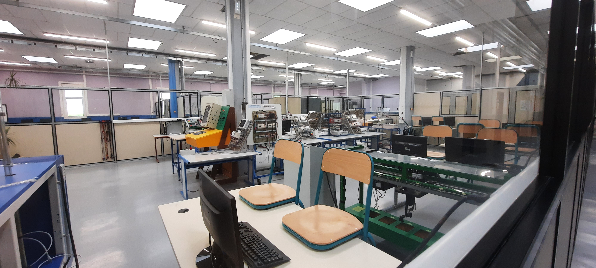

Espace BTS Électrotechnique (ET)
• Objectifs de la formation
Le BTS électrotechnique forme des spécialistes de l'étude, de la mise en oeuvre,
de l'utilisation et de la maintenance des équipements électriques. Il peut arriver d'intervenir
sur des machines ayant des modules hydraulique, pneumatique...
.
• Accès à la formation
Le BTS Electrotechnique est accessible à tout titulaire d'un baccalauréat :
bac professionnel industriel de l'électrotechnique, bac STI2D.
.
• Débouchés professionnels
Le technicien supérieur peut exercer son activité dans différents secteurs
tels que les équipements et le contrôle industriels, la production et la transformation de l'énergie,
les automatismes et la gestion technique du bâtiment
